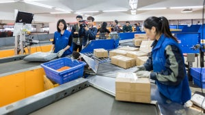
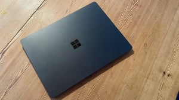

Ein Startup hat in San Francisco ein ungewöhnliches Experiment gestartet. Sie haben ihrer KI die Leitung eines Geschäfts anvertraut. Dabei kann deren KI-Agent jederzeit selbst entscheiden, was verkauft wird, wer als Hilfe eingestellt werden soll und was Kund:innen bezahlen müssen. Doch dabei gibt es noch ein paar Probleme.

KI-Werkzeuge aus China wie Accio erlauben es Online-Händlern, mit wenig Aufwand neue Produkte zu entwickeln und Lieferanten zu finden. Das schlägt sich jetzt auf den Handelsplattformen wie Alibaba nieder.

Die Teuerung bei RAM und Flash-Modulen schlägt sich auch auf die Geräte der Surface-Linie von Microsoft durch. Teilweise zahlt man vierstellige Aufpreise. Was das für den Markt bedeutet.